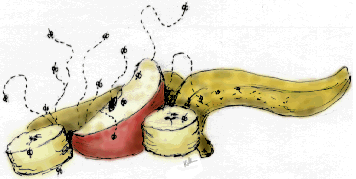
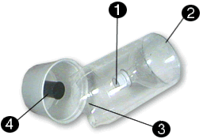
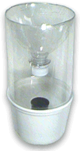
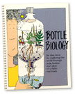

| |
2-Liter Bottle |
Fruit Fly Trap
Build a fruit fly trap out of a 2-liter plastic bottle. Fruit flies are easy to catch in warm weather. Once you catch some, you will be able to see their life cycle up-close.
You'll need:
- 2-liter plastic bottle
- butter tub
- film canister
- masking tape
- fruit
Make a small hole in the lid
Cut top / tape it upside down
Cut bottom off of bottle
Tape film canister to butter tub


Add fruit to film canister / push pieces together
2 Weeks Later
Watch carefully, they're tiny, it happens fast. The females in your trap will lay eggs, and in a few days they'll hatch. Watch for the different stages - eggs, larvae, pupae, fruit fly. The entire life cycle only takes about 2 weeks.Fruit Fly Colony
Use your fruit fly colony to feed a spider or praying mantis living in a Predator-Prey Column.
What else can you do with recycled materials? |
 |

|
What other types of food are fruit flies attracted to? Examine a fruit fly with a hand held lens and draw a picture of the parts. What predators are fruit flies used as prey for? |
|
 |
|
|
||
|
||
|
|
||
 Gathered by topic |
 Connected together |
 Index of ideas |
 Search |
 Predator-Prey Column
Predator-Prey Column 
 Recycled Whirligig
Recycled Whirligig